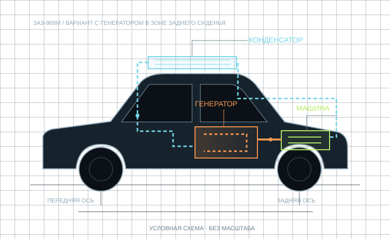
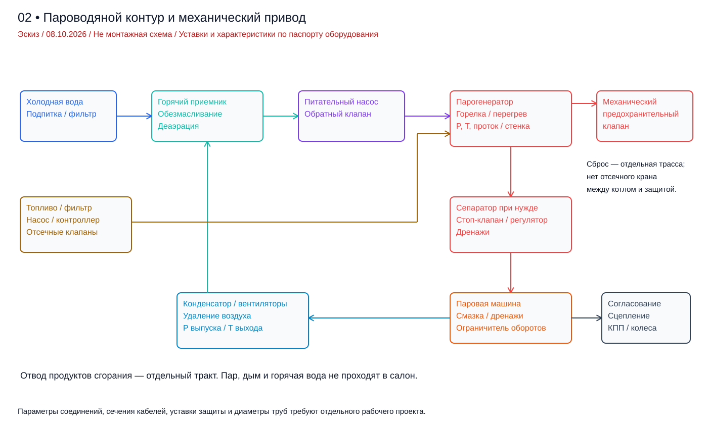
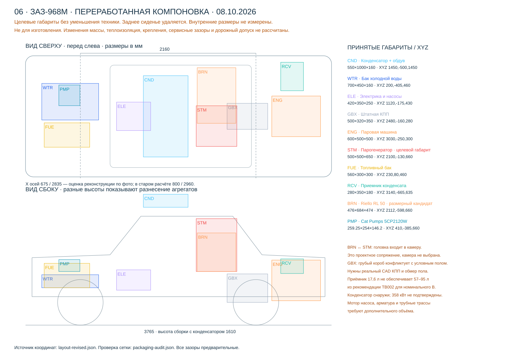

Генератор
Топливо и тепло превращают подаваемую воду в пар.
ТЕПЛОВОЙ ПОДВОДИсследуем паровой привод для ЗАЗ-968М: от теплового баланса до размещения агрегатов и управления с приборной панели.

Расчёты и модель основаны на явных допущениях. Физический аудит выявил несогласованные обороты, ограничения насоса и горелки. Посадка, теплоотдача, масса и дорожный допуск ещё требуют подтверждения.
Проверка расчётов ↗Горелка нагревает проточный генератор. Пар совершает работу в цилиндрах, затем конденсируется. Полученная вода возвращается в питание установки.
Топливо и тепло превращают подаваемую воду в пар.
ТЕПЛОВОЙ ПОДВОДРасширение пара вращает вал и приводит трансмиссию.
МЕХАНИЧЕСКАЯ РАБОТАБольшой теплообменник отводит оставшееся тепло.
ТЕПЛОВОЙ ОТВОДНасос возвращает конденсат; потери требуют подпитки.
ЗАМЫКАНИЕ КОНТУРАСравнение на полной нагрузке в принятой модели. Скорости — цели сценариев. Бюджеты — диапазоны планирования разработки, до предложений поставщиков.
50 км/ч · цель расчётного сценария
Небольшая мощность сохраняет проблему теплоотвода.
Исследовать вариант →80 км/ч · цель расчётного сценария
Остаток до 1200 кг — около 55 кг с одним водителем.
Исследовать вариант →100 км/ч · цель расчётного сценария
Превышение условной полной массы — 18,4 кг.
Исследовать вариант →Рубли и евро — независимые ориентиры бюджета. Расходы относятся к модели с постоянными КПД, давлением выпуска 1,2 бар abs и принудительным обдувом. Они не описывают все возможные паровые установки. Ни один сценарий пока не подтверждён для дорог.
Изменить скорость, уклон и массу в калькуляторе →Два подхода: генератор в моторном отсеке или в освобождённой зоне заднего сиденья — по примеру парового Volkswagen Mobile Steam Society.
В сборке есть реконструкция кузова по фотографиям и заводской насос; остальные агрегаты — целевые габариты. Точные внутренние размеры кузова ещё не подтверждены. Изменение геометрии не пересчитывает массу и теплообмен.
Трёхцилиндровый Hirth от снегохода переделали на пар. Проточный генератор занял место задних сидений, а конденсатор вынесли над лобовым стеклом.
Пример полезен для выбора архитектуры. Надёжные значения мощности, давления, расхода топлива и объёма воды в найденных материалах не установлены.
Пять листов: компоновка, паровой контур, управление, приборная панель и альтернативная архитектура. Доступны PDF, SVG и DXF для компоновки.

Три проекции и целевые габариты агрегатов.

Генератор, машина, конденсатор и возврат воды.

Регулирование процесса и независимая защитная цепь.

Предложение органов управления и индикации.

Два места, отдельная горелка, наружный конденсатор и координаты.

Генератор вместо заднего сиденья, наружный конденсатор.
Листы являются компоновочными эскизами. Рабочие чертежи котла, силовых креплений и адаптера для изготовления ещё предстоит разработать.
Следующий этап — заменить целевые габариты и расчётные допущения паспортами оборудования, обмерами и подтверждёнными требованиями.
Тепловой и дорожный баланс, сравнение сценариев, две компоновки и схемы управления.
Обмеры кузова, реальные массы и характеристики агрегатов, проверка доступного теплообменника.
Требования России и Финляндии, прочность креплений, защиты, испытания и регистрация изменений.
В 3D-сборке открывается округлая реконструкция ЗАЗ-968М и переработанный вариант с генератором вместо заднего сиденья: 35 узлов, срезы и проверка зазоров. Наружные размеры заданы по документации, внутренние поверхности требуют обмеров.
Новая расстановка и проверка зазоров →